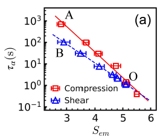

Hi! I'm Qingyu Qu (屈清宇), a researcher interested in the learning and representation of natural data, especially by artificial and biological neural networks. I am currently pursuing my PhD in the Liu Ziming AI Science Research Group and also work at MetaCircle.
Follow my updates on GitHub.
